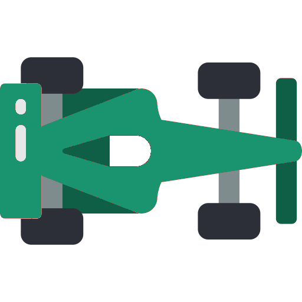

Q-Learning#

In this lesson, we’ll dive into Q-Learning, a popular value-based reinforcement learning algorithm. Unlike policy-based methods (like Policy Gradients), Q-Learning aims to learn the optimal value of state-action pairs to derive a policy indirectly.
Q-Learning is an off-policy algorithm, meaning it can learn the optimal policy even if the agent takes actions that are not part of that optimal policy during training. In other words, Q-Learning doesn’t rely on the current policy to collect experiences; instead, it learns the best policy by estimating the Q-values for all state-action pairs. This allows the agent to improve its policy based on both exploratory and greedy actions, making it more flexible and efficient.
The Q-Value Function#
The Q-value, denoted as Q(s,a)Q(s,a), is a measure of the expected cumulative reward the agent can obtain starting from state \(s\), taking action \(a\), and then following the optimal policy. Formally, it can be expressed as:
Where \(Gt\) is the total discounted return from time step \(t\) onward.
The central idea of Q-Learning is to iteratively update the Q-values using the Bellman equation, which we’ll explore in more detail below: $\(Q(s,a)←Q(s,a)+α[r+γmaxa′Q(s′,a′)−Q(s,a)]\)$
Here:
\(α\) is the learning rate, controlling how much we update the Q-value,
\(r\) is the reward received after taking action aa in state ss,
\(s\) is the next state,
\(γ\) is the discount factor (same as in policy gradients), balancing immediate vs. future rewards,
\(maxa′Q(s′,a′)\) is the maximum Q-value of the next state s′s′, assuming the best action is taken in that state.
In simpler terms, the equation adjusts the current Q-value by adding the reward the agent received, plus the best possible future reward (based on the next state). The agent updates its knowledge with each experience, slowly refining its Q-values until it learns the best actions to take in any state.
Temporal difference learning#
Temporal Difference (TD) Learning is a key component of Q-Learning. It allows an agent to learn from raw experience without waiting for the episode to finish. TD learning updates Q-values incrementally after each action, by bootstrapping from the estimated Q-values of the next state. Unlike Monte Carlo method that we saw in the previous chapter, which wait until the end of an episode to update, TD learning updates at every step, allowing for more immediate adjustments.
In TD learning, we estimate the Q-value at each step by combining the immediate reward and the estimated value of the next state-action pair. This estimation is known as the TD target: $\(TD target=r+γmaxa′Q(s′,a′)\)$
The TD error is the difference between the TD target and the current Q-value estimate: $\(TD error=[r+γmaxa′Q(s′,a′)−Q(s,a)]\)$
This error measures how far off the current Q-value is from the expected future rewards. The Q-value is then updated using the TD error as follows: $\(Q(s,a)←Q(s,a)+α TD error\)$
Here:
\(α\) is the learning rate, determining how much the Q-value is adjusted in response to the TD error,
\(γ\) is the discount factor, determining how much future rewards are valued.
In contrast to Monte Carlo methods, which wait until the end of an episode to update values, TD learning updates the Q-value after every step.

The Bellman Equation
The Bellman equation is a recursive formula that expresses the relationship between the value of a state-action pair and the value of the subsequent states. For Q-Learning, the Bellman equation is used to update the Q-values based on the reward from the current step and the expected future rewards from the next state.
The Bellman equation for Q-values is: $\(Q(s,a)=E[r+γmaxa′Q(s′,a′)∣s,a]\)$
This equation shows that the Q-value of a state-action pair \((s,a)\) is equal to the immediate reward \(r\) plus the discounted maximum Q-value of the next state \(s′\), given that the best action a′a′ is taken in that state.
When the agent updates its Q-values during training, it uses this Bellman equation in the form of an update rule:
Here, the term \(r+γmaxa′Q(s′,a′)\) represents the TD target (the updated estimate of the Q-value), and the difference between this and the current estimate Q(s,a)Q(s,a) is the TD error. This error drives the update, gradually improving the Q-values over time.
The Q-Learning Process#
The Q-Learning algorithm works by interacting with the environment, updating Q-values based on experience, and gradually converging to the optimal policy. The process typically follows these steps:
Initialize Q-values: Start by initializing the Q-table (or function) for all state-action pairs arbitrarily (often to zeros).
For each episode and each step:
Observe the current state \(s\).
Choose an action \(a\) using an exploration strategy like epsilon-greedy: With probability \(ϵ\), choose a random action (exploration), Otherwise, choose the action with the highest Q-value (exploitation).
Execute action \(a\), observe the reward \(r\), and the next state \(s′\).
Update the Q-value for \((s,a)\) using the Bellman equation.
Set the current state to \(s′\) and repeat until the episode ends.
Repeat for many episodes: Over time, the Q-values should converge to the optimal values, and the agent will learn the best policy (the set of actions that maximizes long-term rewards).
Epsilon-Greedy Exploration#
In Q-Learning, a common exploration strategy is the epsilon-greedy approach. This strategy balances exploration (trying new actions) and exploitation (choosing the best-known actions). It works as follows:
With a probability \(ϵ\), choose a random action (exploration),
With a probability \(1−ϵ\), choose the action with the highest Q-value (exploitation).
This ensures that the agent explores the environment sufficiently, especially early in training, while gradually shifting towards exploiting its learned policy as ϵϵ decays over time.
Replay Memory#
Replay memory is a technique we will be using, where the agent stores past experiences in a memory buffer and reuses them for training. Instead of learning only from consecutive steps, the agent randomly samples past experiences to break correlations and improve learning stability. This allows the agent to learn from a diverse set of experiences and reinforce important information.
Target network#
In Deep Q-Networks (DQN), the target network is used to stabilize the training process. The Q-network, which estimates the action-value function, is updated at each step based on new experiences. However, if the Q-values were used directly in the Bellman update, they would change too rapidly, leading to high variance and instability in learning. To address this, DQN introduces a target network, which is a copy of the Q-network but with frozen weights. This target network provides stable Q-value targets during training, ensuring that the learning process does not become erratic.
The target network is updated less frequently than the Q-network, typically every X steps, where X could be a fixed number like 1,000. By periodically copying the weights of the Q-network to the target network, DQN ensures that the Q-value targets are less likely to fluctuate as much between updates. This method helps to prevent feedback loops and improves the stability and convergence of the learning process, allowing the agent to learn more effectively from its experiences.
Coding Deep Q-Network#
import torch
import random
import numpy as np
from torch import nn
class QCar:
def __init__(self):
self.model = self.create_model() # 1. Intiliaze Q values
def act_epsilon_greedy(self, state):
state = torch.tensor(state, dtype=torch.float32).to(self.device)
if np.random.random() < self.epsilon:
return np.random.randint(0, self.output_size)
else:
return int(np.argmax(self.get_qs(state)))
def action_train(self, state):
action = self.act_epsilon_greedy(state) ## Choose an action
# Execute action
if action == 0:
self.angle += 10 # Left
elif action == 1:
self.angle -= 10 # Right
elif action == 2:
if self.speed - 2 >= 6:
self.speed -= 2 # Slow Down
else:
if self.speed + 2 <= 10:
self.speed += 2 # Speed Up
return action
def train(self):
mini_batch = random.sample(self.replay_memory, self.mini_batch_size)
states, actions, rewards, new_states, dones = zip(*mini_batch)
states = torch.tensor(np.array(states), dtype=torch.float32).to(self.device)
actions = torch.tensor(np.array(actions), dtype=torch.long).to(self.device)
rewards = torch.tensor(np.array(rewards), dtype=torch.float32).to(self.device)
new_states = torch.tensor(np.array(new_states), dtype=torch.float32).to(
self.device
)
dones = torch.tensor(np.array(dones), dtype=torch.float32).to(self.device)
# Compute Q values
current_q_values = self.model(states).gather(1, actions.unsqueeze(1)).squeeze(1)
# Use the online network to select actions for the next state
next_actions = self.model(new_states).argmax(1).unsqueeze(1)
next_q_values = self.target_model(new_states).gather(1, next_actions).squeeze(1)
target_q_values = rewards + self.discount_factor * next_q_values * (1 - dones)
loss = nn.MSELoss()(current_q_values, target_q_values)
self.optimizer.zero_grad()
loss.backward()#Update the Q-value
torch.nn.utils.clip_grad_norm_(self.model.parameters(), max_norm=1.0)
self.optimizer.step()
self.update_target_network()
self.epsilon_decay()
return loss.item()
class QRace:
def training_race(self, car, episodes):
for episode in range(1, episodes + 1): #2. For each episode
current_state = car.get_data() # Observe the current state
done = False
episode_reward = 0
while not done:
action = car.action_train(current_state) # Choose an action and execute it
new_state, reward, done = self.step(car) # Observe the new state
episode_reward += reward
current_state = new_state
car.update_replay_memory(current_state, action, reward, new_state, done)
loss = car.train() #Update the Q-values
Actual training#
[INSERT VIDEO OF THE ACTUAL TRAINING]